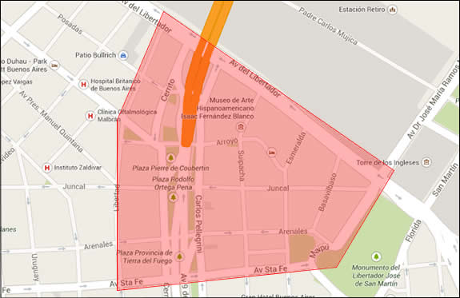

Ahora podes pedir Farinelli online a través de nuestra página de pedidos.
Todos los días podes chequear la carta a partir de las 10:00 y dejar tu pedido ya registrado.
Empezamos a repartir a partir de las 12:00 y hasta las 16:00.
Igual que en nuestros locales, hay un stock diario de cada plato.
Para asegurarte que tu selección esté disponible te recomendamos que hagas el pedido lo más temprano posible.
La hora de la entrega la decidis vos.
La compra mínima es de $70 y el costo de envío es de $5.
Este es el radio de entrega con el que empezamos:
